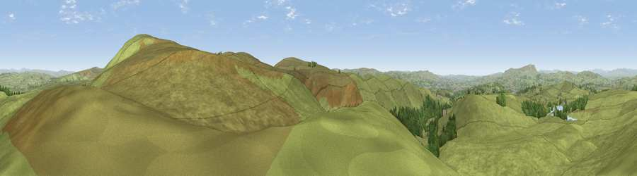

Viewpoint near Trawden
#13288 in England · top 21% of its area beats it · near Trawden · access?Where it is
The exact computed spot (SD 91125 35225). Click the marker for map links.
Public access: no public right of way or access land is recorded at this exact spot — it may be on private land. Computed from Natural England's CRoW access layer and OpenStreetMap rights of way — not the legal definitive map. Always verify locally.
The view, rendered

A 360° render of this exact spot computed from the terrain model, tree cover and land cover — summer colours, afternoon light, calibrated against photographs of famous viewpoints. Real trees, hedges and buildings will differ in detail.
The panorama
Grey silhouette: terrain skyline in each direction (720 bearings, Earth curvature and refraction included). Dashed green: skyline with trees (+15 m) and buildings (+8 m) as obstacles. Blue strip: how far the ground is visible on each bearing.
Where the view opens
Wedge length = distance to the farthest visible ground on that bearing (vegetation-aware). Rings at 10, 25 and 50 km.
What fills the view
93% grassland · 6% woodland ·
Angular shares of the visible panorama (visual magnitude), not map area. Landscape diversity 0.13 (0–1 Shannon).
Key numbers
More beautiful places nearby
The staircase of upgrades: each row has a higher view potential than everything closer. Driving times are estimates from straight-line distance, calibrated against real road routing — check an actual route before setting out.
| Place | Direction | Drive | Score |
|---|---|---|---|
| Viewpoint near Haggate | SW · 2 km | ~4 min | 60.1 |
| Lad Law (Boulsworth Hill) | ENE · 2 km | ~5 min | 71.5 |
| Pendle Hill | WNW · 12 km | ~23 min | 76.5 |
| Viewpoint near Edenfield | SSW · 19 km | ~32 min | 77.5 |
| Darwen Hill | WSW · 27 km | ~43 min | 80.7 |
| White Brow | SW · 34 km | ~52 min | 82.9 |
| Warton Crag | NW · 56 km | ~78 min | 83.2 |
| Viewpoint near Grange-over-Sands | NW · 67 km | ~90 min | 83.4 |
53.81323, -2.13627 · source: screening · position refined by local search. Computed location — check access rights before visiting.